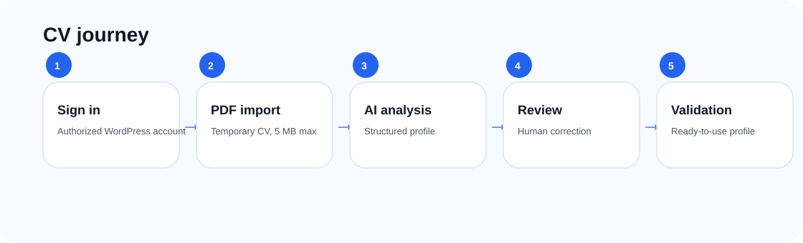
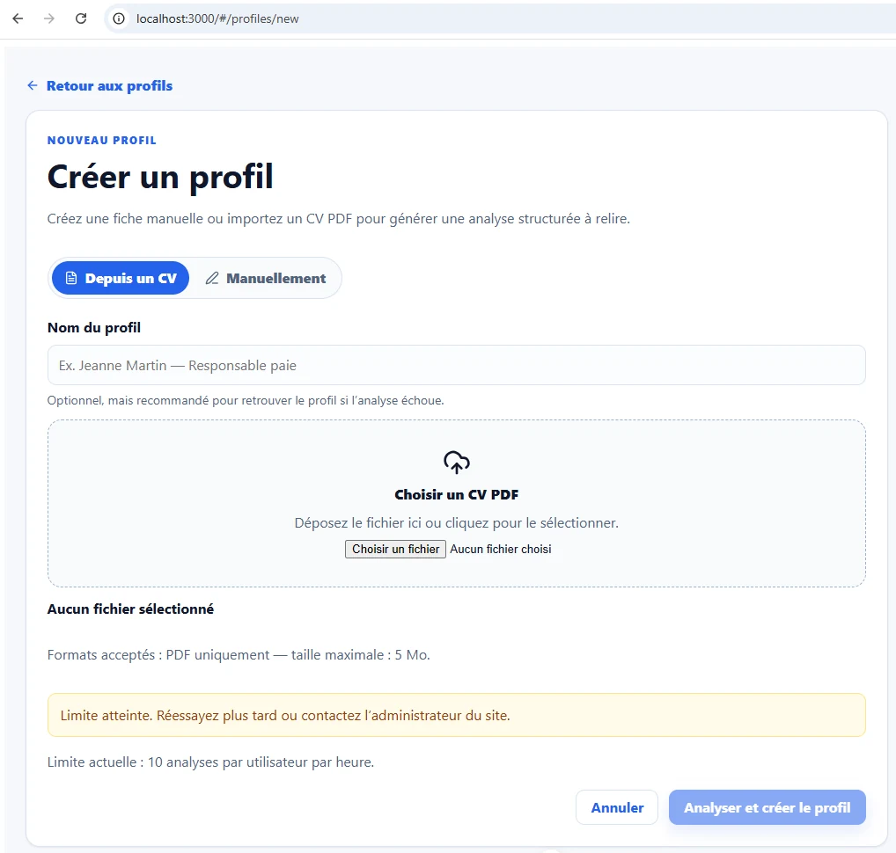
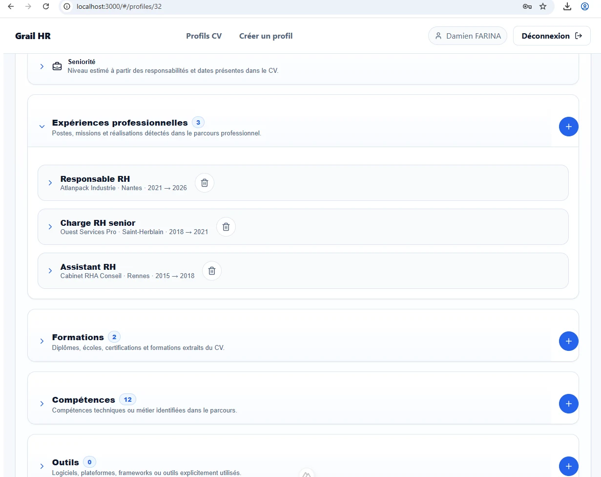

01
Sign in
The user signs in with an authorized WordPress account. Access depends on an active Grail HR status and access level.

The journey follows a simple principle: automate structure, keep review and validation in human hands.

The user signs in with an authorized WordPress account. Access depends on an active Grail HR status and access level.
The profile page lets users find imported candidates, filter statuses and open a profile.

The prototype can create a profile from a PDF resume or manually.

The analysis produces a summary, identity details, career orientation and editable detailed sections.

Experience, education, skills and tools are organized into collapsible blocks for easier review.
